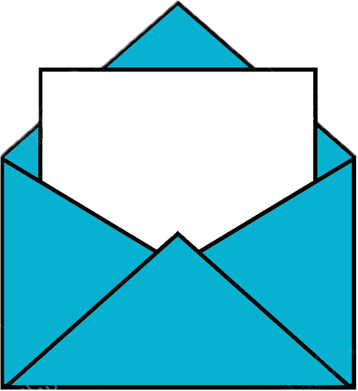

<div class="centrado">
  <h1>Listado de consultas</h1>
  <h5 *ngIf="lista.length<=0">SIN CONSULTAS PENDIENTES</h5>
  <ion-grid>
    <ion-row *ngFor="let consulta of lista" class="ion-align-items-start">
      <div id="divRow" *ngIf="consulta.estado!=='respondido'">
        <ion-col>
          {{consulta.user.apellido}} {{consulta.user.nombre}}
        </ion-col>
        <ion-col>
          {{consulta.user.mesa.codigo}}
        </ion-col>

        <ion-col>
          {{consulta.fecha | date: 'dd/MM/yyyy HH:mm:ss' | milisecondsToDate}}
        </ion-col>
        <ion-col *ngIf="consulta.estado=='leido'">
          
        </ion-col>
        <ion-col *ngIf="consulta.estado=='sin leer'">
          
        </ion-col>
      </div>

    </ion-row>

    <app-form-consulta *ngIf="mostrarFormConsulta" (respuestaCanceladaEvent)="mostrarFormConsulta=false"
      [consulta]="consultaSeleccionada"></app-form-consulta>

  </ion-grid>
</div>